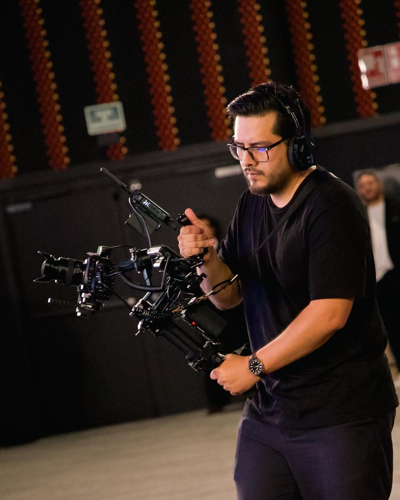

Al servicio de la cultura y los momentos especiales.
Fotografía, vídeo y motion graphics para música clásica, artistas y marcas. Madrid.
Ver el trabajo ↓Agenda abierta temporada 26/27
Escríbeme →Cada frame tiene una intención.
No documento por documentar: construyo narrativas visuales que sirven al artista, al proyecto y al momento.
Trabajo
Elige qué quieres ver y abre cada proyecto para ver sus fotos y vídeos.
En movimiento
Reels de concierto, videoclips y grabaciones sinfónicas.
Reels
14 · desliza →Films & videoclips
8Servicios
De la sala de conciertos a las redes: foto, vídeo y postproducción en un mismo equipo.
-
- Conciertos y recitales
- Festivales y concursos
- Graduaciones
-
- Reels verticales
- Videoclips
- Conciertos completos
- Operador de cámara
- Entrevistas
-
- Retrato y prensa
- Portadas de disco
- Lookbooks
- Contenido para redes
-
- Montaje
- Etalonaje (DaVinci Resolve)
- Rótulos y gráficos animados
- Subtítulos ES · EN · IT · DE · PT
- Campañas para redes
Trabajar con Samuel en los videoclips de mi disco fue una experiencia súper especial. Desde el primer momento entendió perfectamente todo lo que quería transmitir y consiguió llevarlo a imagen de una forma muy natural y bonita.
Han confiado en mí

Sobre mí
Imagen al servicio de la cultura.
Soy Samuel, fotógrafo y filmmaker con base en Madrid. Mi trabajo nace de una pasión profunda por la música clásica y las artes escénicas, aunque también acompaño campañas, proyectos personales y musicales de toda índole.
Creo en el poder de la cultura como motor de cambio, y en que quienes trabajan para ella merecen una imagen a la altura de su misión.
Trabajemos juntos¿Trabajamos juntos?
Hablemos de tu proyecto.
info@smvisuals.esMadrid, España · Disponible para proyectos en toda España y fuera.